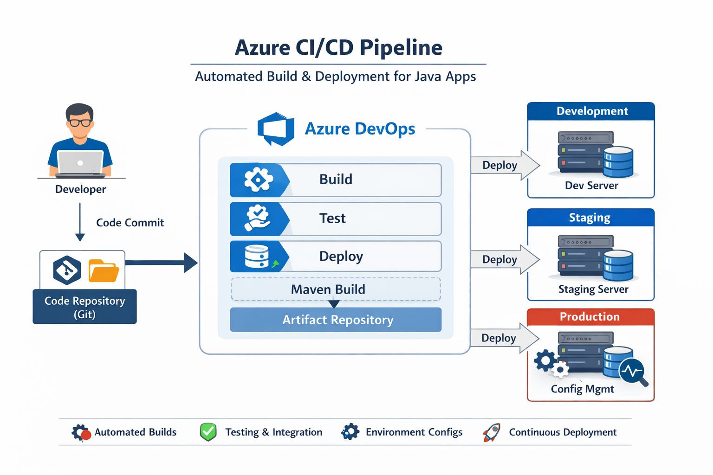
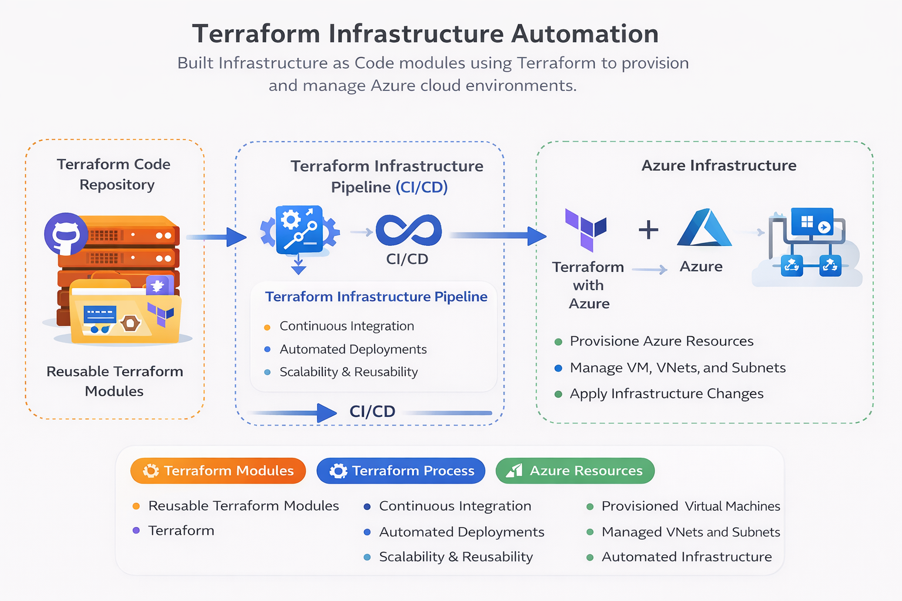
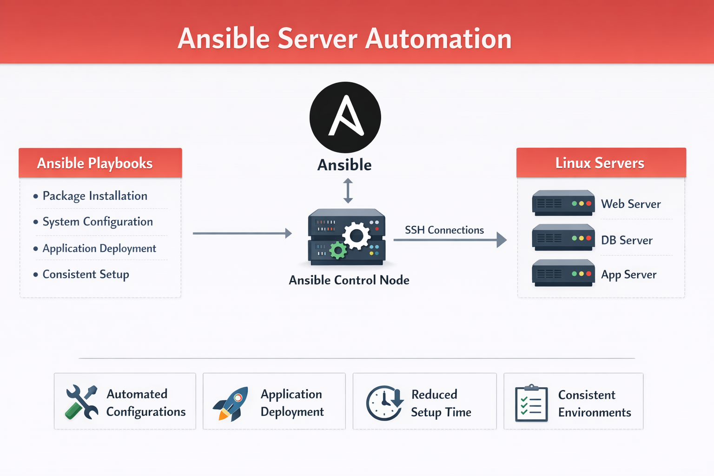
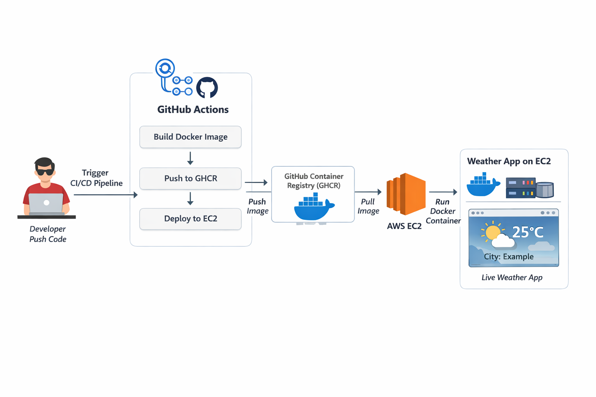
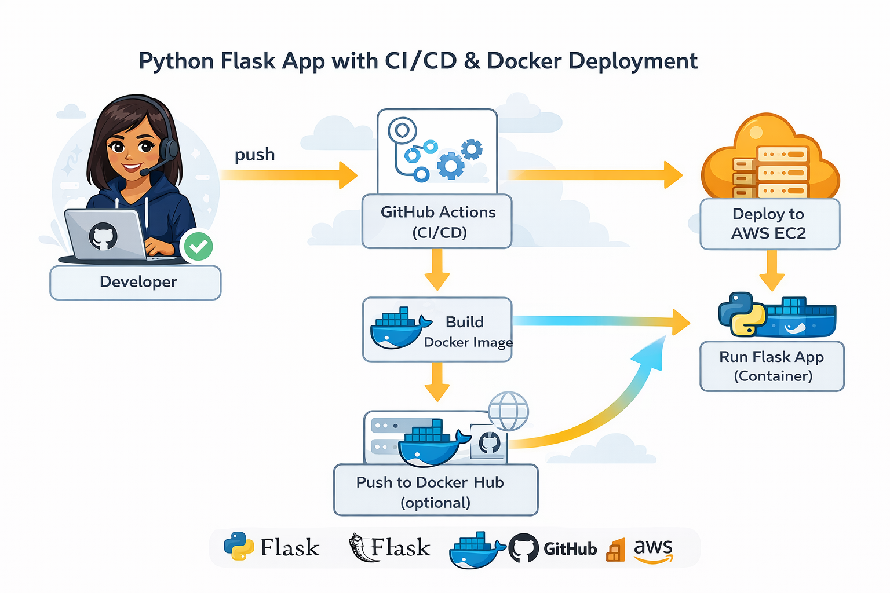

I design automated infrastructure, CI/CD pipelines, and scalable cloud systems, transforming manual processes into efficient automated workflows using modern DevOps tools. Passionate about building reliable, high-performance systems, I focus on optimizing deployments, improving system resilience, and solving real-world production challenges.
DevOps Engineer with 3.5+ years of experience in Azure, Terraform, CI/CD pipelines, and automation. I enjoy turning complex manual processes into efficient automated workflows and tackling production challenges. Always curious and continuously learning new technologies, I am currently seeking opportunities to apply my skills, grow further, and contribute to building reliable and scalable systems.
Azure
AWS
Terraform
Ansible
Docker
Kubernetes
Jenkins
Azure DevOps
Linux
Unix Shell
PostgreSQL
Grafana

Designed and implemented an automated CI/CD pipeline using Azure DevOps to build and deploy Java-based applications across multiple environments.

Built Infrastructure as Code modules using Terraform to provision and manage Azure cloud environments.

Developed Ansible playbooks to automate configuration and management of Linux servers.

Developed a modern weather web application with a glassmorphism UI, integrated with a complete CI/CD pipeline. The application fetches real-time weather data and is containerized using Docker, with automated deployment to AWS EC2 using GitHub Actions.

Developed a Python-based web application using Flask and implemented a complete CI/CD pipeline for automated build, testing, and deployment. The application is containerized using Docker and deployed on AWS EC2 with seamless automation using GitHub Actions.
Amdocs
Jul 2024 – Present
Amdocs
Jul 2022 – Jul 2024
A high-level overview of how I design and implement CI/CD pipelines using modern DevOps tools and practices.
Code
GitHub
Commit & Push
Git
Build
Maven / Docker
Test
JUnit
CI/CD
GitHub Actions
Deploy
Azure
Monitor
App Insights
Pune, India